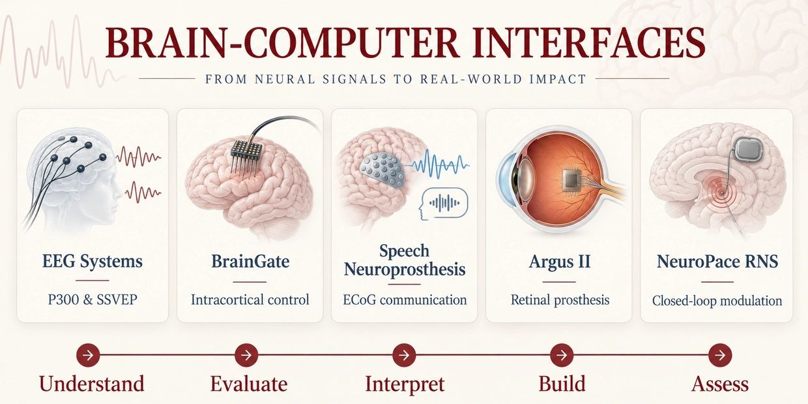

Teaching
ECE6809G · Fall 2026
Brain–Computer Interfaces
A graduate course on the scientific principles, engineering methods, and translational challenges of brain–computer interfaces. We connect neuroscience foundations with neural-signal acquisition, decoding, system evaluation, and responsible clinical translation.
- Motor BCIs & language BCIs
- Visual neuroprostheses & closed-loop BCIs
- Reproducible neural decoding with the NLB benchmark
